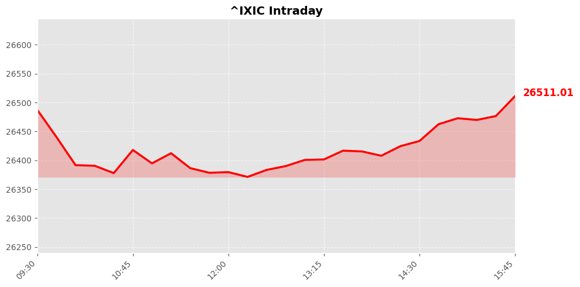
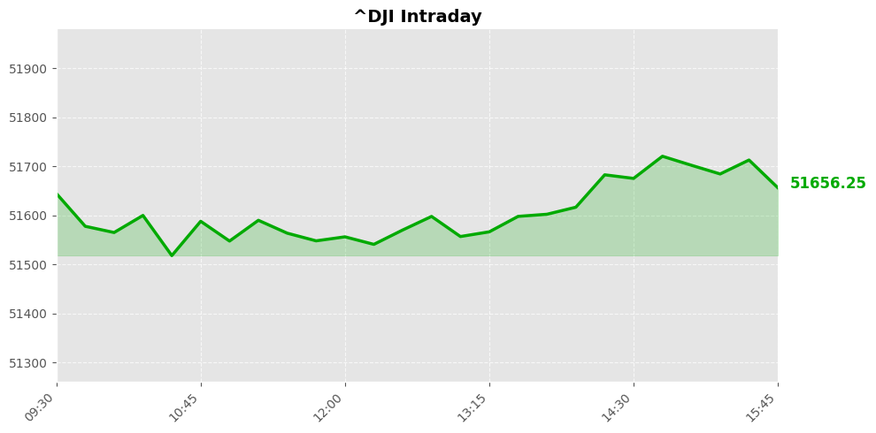
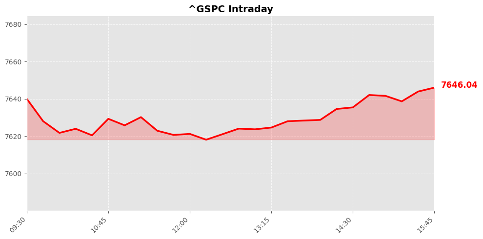

美股市场简报
2026年09月19日 | StockGate 美股通
📊 市场概览



今日三大指数呈现典型的震荡分化格局。纳斯达克指数收报26522.54点，录得+0.39%涨幅，科技权重股延续强势支撑。反观传统工业与金融领域，道琼斯指数收于51682.64点，出现-0.18%的小幅回撤。综合来看，市场整体由成长端主导，标普500指数微涨+0.17%至7650.5点，多空力量在关键整数关口附近完成充分换手，存量博弈特征显著。
盘面结构性轮动加速，资金呈现明显的跷跷板效应。人工智能与半导体产业链持续吸纳流动性，相关ETF份额连续净流入，推动科技估值中枢稳步抬升。与此同时，周期类及高股息防御板块遭遇获利了结压力，部分大型蓝筹股出现缩量阴跌。日内主力资金向成长型因子集中倾斜，而价值型资产则面临阶段性抛压。整体成交量能维持平稳，未现极端异动，表明当前市场处于数据验证期的理性观望状态，筹码交换以结构优化为主。
📰 今日要闻
【要闻焦点】 麦当劳公布美国区价值套餐策略调整，因录得逾一年最慢销售增速。
【投资推演】 餐饮消费降级趋势显现，麦当劳主动降价保量属于防御性破局动作，短期利好可选消费估值修复，但需警惕毛利率承压风险，建议关注后续同店数据验证。
【要闻焦点】 机构提示在杜邦公司财报节点前逢低布局，同时网络安全板块遭遇获利了结抛压。
【投资推演】 材料龙头具备穿越周期的工业定价权，回调即提供左侧配置窗口；而科技资金从网络安全向高股息转移，显示市场风险偏好阶段性收敛，建议规避高位拥挤交易。
【要闻焦点】 耐克终止与顶流球星姆巴佩合约，后者转投国产跑鞋品牌On昂跑。
【投资推演】 流量资产重估引发运动服饰格局洗牌，On昂跑获顶级背书将加速北美市场渗透，构成业绩催化；反观耐克面临品牌势能回撤压力，库存去化仍需时间。
【要闻焦点】 迪士尼首位首席技术官正式上任，管理层全面强化数字化转型战略。
【投资推演】 传统媒体巨头向人工智能与流媒体底层架构靠拢，标志着内容变现模式升级，此举为迪士尼开辟第二增长曲线，长期看好其降本增效逻辑兑现。
【要闻焦点】 苹果发布iPhone 18并开启全球发售，零售端体验备受机构关注。
【投资推演】 硬件换机潮叠加AI终端生态闭环，直接拉动上游精密制造订单，供应链环节迎来旺季预期上修，核心代工与零部件厂商有望享受估值溢价。
【要闻焦点】 快餐连锁温迪最大美国加盟商申请破产保护，行业整合加速。
【投资推演】 中小特许经营商抗风险能力薄弱暴露出餐饮加盟模式财务脆弱性，头部直营企业凭借规模优势实现市占率逆势扩张，但整体行业客流疲软制约板块β收益。
【要闻焦点】 宏观研报指出全球利率体系重构、人工智能估值焦虑及原油长周期波动成核心变量。
【投资推演】 美债收益率曲线倒挂深化压制成长股贴现率，资金被迫切换至能源与红利资产应对通胀粘性；科技线需等待盈利验证以消化泡沫风险，大类资产配置进入再平衡窗口期。
【要闻焦点】 体育博彩赛道营收持续领跑，新兴预测平台分流传统庄家份额。
【投资推演】 合规化进程推动在线博彩渗透率攀升，现金流充沛支撑高分红政策，但监管博弈加剧，标的呈现结构性分化，优选拥有牌照护城河的龙头。
【要闻焦点】 地缘冲突升级导致美军伤亡数据存疑，法航借高端转型对冲航线中断冲击。
【投资推演】 中东局势外溢直接扰动航运保险成本，航空运输板块短期受油价飙升拖累，但客单价提升策略若成功将改善盈利模型，需密切跟踪运费指数与避险情绪联动。
【要闻焦点】 意大利呼吁增派军舰护航红海航道，保障全球物流动脉安全。
【投资推演】 海运通道稳定性成为大宗商品定价关键锚点，护航常态化降低苏伊士运河通行折价，利好跨洋贸易链与
📈 宏观经济数据
💰 利率与货币政策
联邦基金利率： 3.6% 0.0个百分点 （前值: 3.6%）
观察日期: 2026-08-01 | 下次公布: 2026-10-28
10年期国债收益率： 4.9% -0.1个百分点 （前值: 5.0%）
观察日期: 2026-09-17 | 下次公布: 2026-09-21
🔥 通胀指标
消费者物价指数(CPI)： 3.4% +0.0个百分点 （前值: 3.3%）
观察日期: 2026-08-01 | 下次公布: 2026-10-14
PCE物价指数： 3.7% -0.0个百分点 （前值: 3.7%）
观察日期: 2026-07-01 | 下次公布: 2026-09-25
核心PCE物价指数： 3.3% +0.0个百分点 （前值: 3.3%）
观察日期: 2026-07-01 | 下次公布: 2026-09-25
生产者物价指数(PPI)： 5.4% +0.6个百分点 （前值: 4.8%）
观察日期: 2026-08-01 | 下次公布: 2026-10-15
👷 就业指标
非农就业人数变化： 159075.0K +162.0K （前值: 158913.0K）
观察日期: 2026-08-01 | 下次公布: 2026-10-02
失业率： 4.1% 0.0个百分点 （前值: 4.1%）
观察日期: 2026-08-01 | 下次公布: 2026-10-02
🛒 消费者指标
零售销售月度变化： 1.2% +1.8个百分点 （前值: -0.5%）
观察日期: 2026-08-01 | 下次公布: 2026-10-15
个人消费支出月度变化： 0.2% -0.2个百分点 （前值: 0.3%）
观察日期: 2026-07-01 | 下次公布: 2026-09-25
🔮 市场展望
隔夜美股三大指数窄幅震荡，显示多空力量处于脆弱平衡。未来一至两个交易日，市场将围绕地缘溢价展开拉锯。纳斯达克指数虽录得小幅上涨，但网络安全板块获利盘涌出，短期走势偏弱。若指数无法守住十日均线，将面临技术性回撤考验。资金正加速向具备防御属性的消费与公用事业切换，低估值蓝筹有望承接溢出流动性并酝酿阶段反弹。整体而言，单边行情暂不具备条件，盘面将以区间震荡消化估值为主。
【重点风控与关注焦点】
交易策略必须坚持以防守为核心，切忌逆势重仓。上方套牢盘密集构成沉重压力位，盲目抄底极易陷入被动。投资者需高度警惕突发地缘冲突升级带来的尾部风险，严格将单笔亏损阈值控制在合理区间。建议维持轻仓观望，预留充足现金以应对盘中异动。一旦宏观情绪回暖且量能温和放大，可顺势跟进具备向上驱动逻辑的细分龙头；若跌破关键支撑平台，则果断执行纪律，规避深度洗盘隐患。
数据来源：Yahoo Finance / Finnhub / Alpha Vantage / FRED / Reddit
报告生成：2026-09-19 04:54
⚠️ 免责声明：美股市场简报 - 2026年09月19日。StockGate 美股通 - 本报告仅供参考，不构成投资建议。投资有风险，入市需谨慎。
🔥 扫码加入【股神星】专属群 🔥
扫码加入股神星交流群，一起享受财富人生
📱 下载飞书App，扫描二维码入群
获取更多美股投资洞察与实时动态